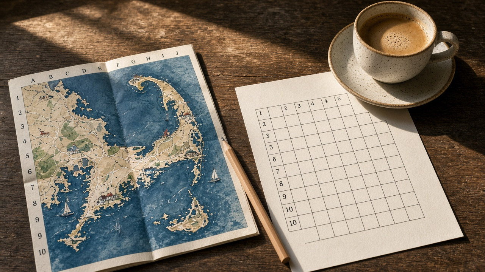

January 2027 · Issue 1
Article pool
Candidate stories and service pages for the January 2027 Falmouth Wellness Discovery magazine. We are building more than will fit in print, then choosing the best for the final issue.
Think You Know Falmouth?
The opening history feature: 1660 to today, Katharine Lee Bates, Woods Hole and the Titanic, the house floats, the Airpark, and the church that strawberries built, each with a pull-out map square.
Read the feature → Candidate for printLocal sports and schools
Falmouth High Clippers winter sports, youth programs at town Recreation and the Y, and a short note on Falmouth High, Lawrence, Morse Pond, and Falmouth Academy. No game dates except those verified from official pages.
Read the candidate page → Candidate for printWinter events, January–March 2027
A calendar of verified winter events — library programs, a Theatre Guild production, the Falmouth Chorale, and school-calendar dates — with confirm notes where 2027 details are not yet posted.
Read the candidate page → Candidate for printCommunity institutions
Library, Senior Center, Chamber, Town Hall, Police, Fire Rescue, and Recreation, each with a verified phone number, address, and a square on the pull-out map where we have one.
Read the candidate page → Candidate for printFalmouth trivia crossword and map hunt
A crossword built from the history feature, plus a “Find it on the map” scavenger hunt tied to grid squares on the pull-out insert.
Open the puzzles →These web pages are the working file for the print issue. Facts stay source-noted. Anything we could not verify is left out or marked to confirm, rather than filled in as a guess.